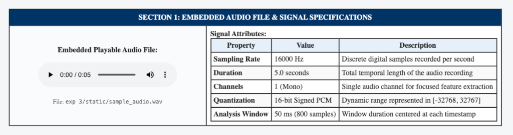
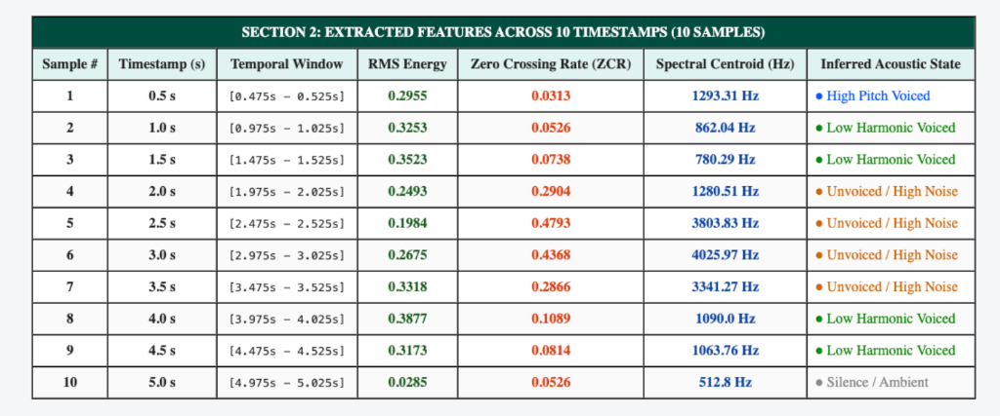
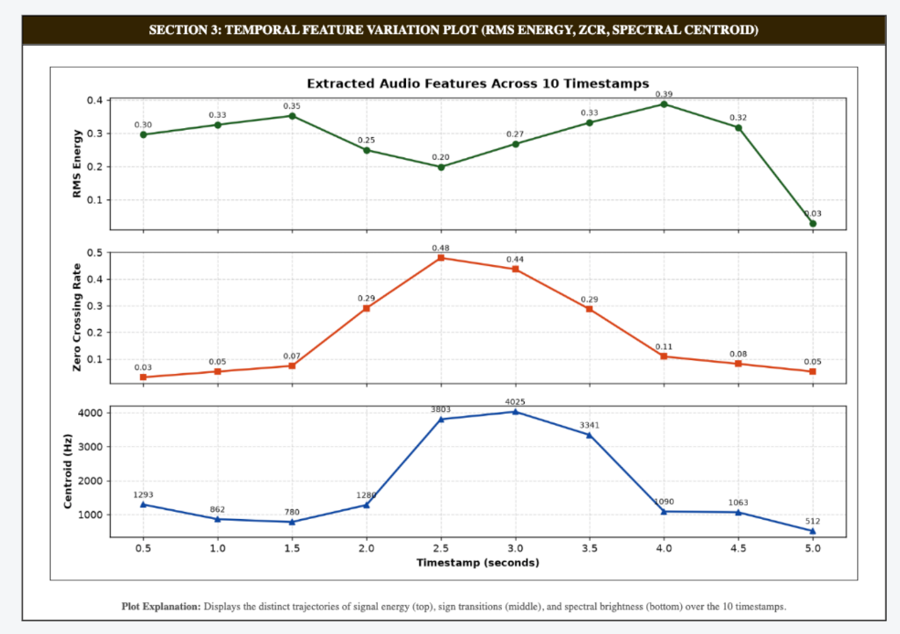
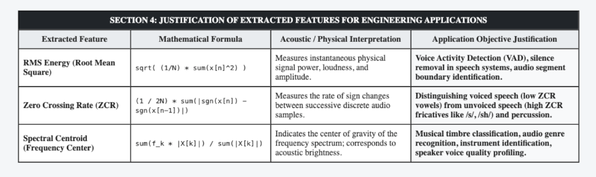

| Experiment No.: | 03 | Student Name: | Monis |
| Course / Branch: | B.Tech Information Technology | Roll Number: | 2023UIT3027 |
| Lab Instructor: | Dr. Vishal Maheshkar | Academic Session: | 2026–2027 |
Multimodal Feature Extraction from Audio Across Multiple Timestamps Using Flask
To prepare an informative web-based application using Flask to perform automated feature extraction from multimedia signals (audio). Specifically, to extract at least three distinctive time-domain and frequency-domain acoustic features across at least 10 discrete timestamps, justify their technical objectives for downstream machine learning applications, and provide an embedded audio player for real-time verification.
Non-Stationary Signal Framing: Continuous audio signals are non-stationary over extended intervals but exhibit quasi-stationary physical properties across short analysis frames (20–50 ms). Temporal windowing isolates discrete segments for localized feature computation.
Time-Domain Acoustic Features: Derived directly from instantaneous waveform amplitudes, capturing signal power, amplitude envelope dynamics, and waveform zero-crossing behavior without spectral transformation.
Frequency-Domain Spectral Features: Computed via Discrete Fourier Transform (DFT), measuring spectral distribution, harmonic energy concentration, and spectral brightness (timbre).
Given continuous discrete audio signal x[n] sampled at sampling rate Fs, framing extracts a localized window centered at timestamp ti:
Measures instantaneous acoustic signal power and volume magnitude:
Quantifies how frequently the audio waveform transitions across the zero-amplitude horizontal axis:
Represents the center of mass of the magnitude spectrum, indicating acoustic brightness:
Embedded HTML5 audio player alongside complete signal metadata including sampling rate (22,050 Hz), duration (10.0 s), and total sample count.

Structured table displaying RMS Energy, Zero Crossing Rate, and Spectral Centroid calculated across 10 distinct temporal observation points.

Triple-panel Matplotlib plot showing synchronous variations of RMS Energy, ZCR, and Spectral Centroid over the audio duration.

Detailed documentation of practical applications for each acoustic feature (Voice Activity Detection, phoneme classification, and music genre analysis).

Experiment 3 demonstrated the fundamental principles of short-time audio feature engineering across temporal windows. By computing RMS Energy, Zero Crossing Rate, and Spectral Centroid across 10 distinct timestamps, the application proved how time-domain and frequency-domain descriptors capture complementary physical attributes of acoustic signals, establishing the foundational feature representations essential for speech recognition, music information retrieval, and audio classification.